Japan-based independent atelier handcrafting premium leather watch straps one at a time, using only the finest hides from the world's most respected tanneries.
Handmade straps
FREE SHIPPING on orders over $300.
Standard & express shipping options available worldwide.
See the complete shipping policy
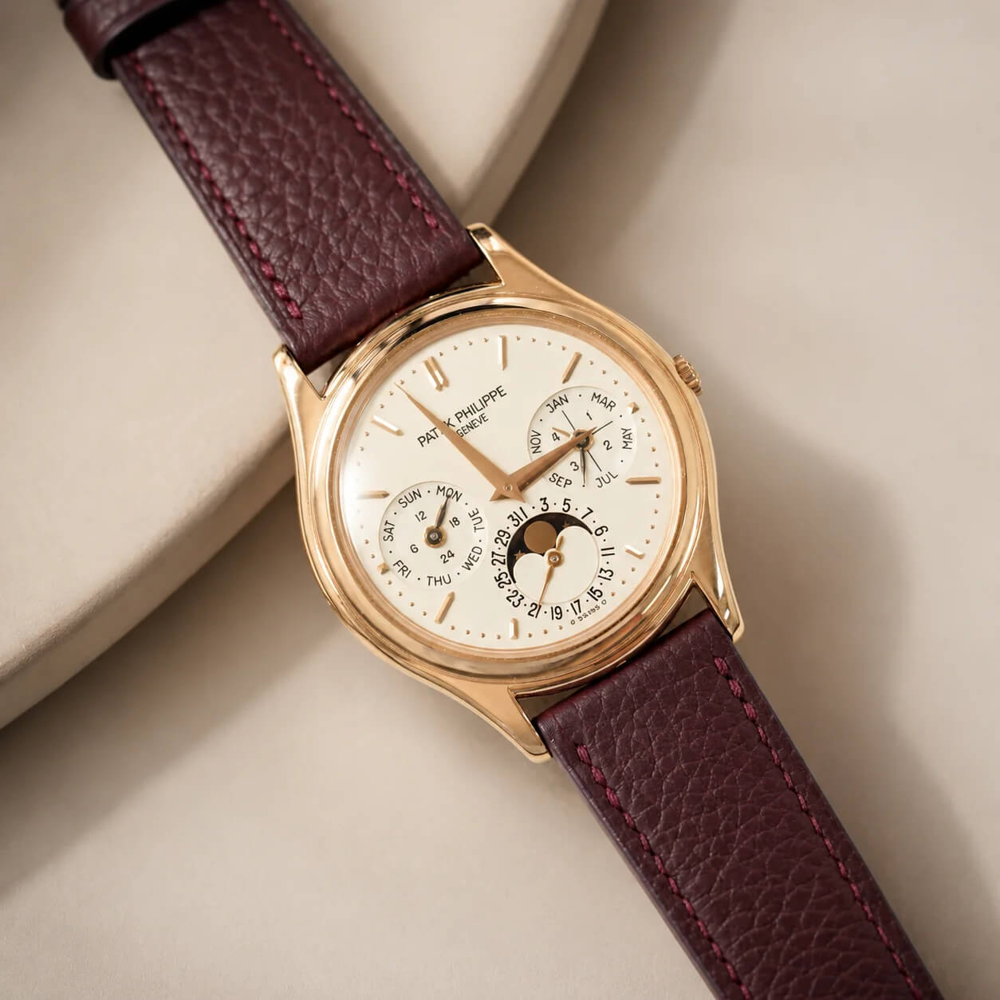
Atelier Tamago focuses on handmade two-piece straps, primarily in leather, alongside FKM sailcloth rubber and other specialist materials.
Width: Straps are available in 18mm, 19mm, 20mm, 21mm, and 22mm. Standard length is 115mm/75mm, which generally suits wrist sizes of approximately 169–179mm. Custom sizes are also available on request, so different widths, lengths, tapers, and configurations can be made to order.
Material: Atelier Tamago sources leathers from some of the world's most respected tanneries and selects only the most refined sections of each hide.
The range includes Swift leather, Barenia, Togo, Suede, Nubuck, Minerva Box, Ostrich, and Epsom, along with FKM sailcloth and Alcantara. Straps feature Zermatt calfskin lining, traditional saddle stitching, and hand-finished edges.
Click on the link to visit a relevant collection:
In Japanese, tamago means "egg", which is a simple symbol of beginnings, possibility, and something waiting to take shape. That idea sits at the heart of the atelier, built on the belief that even the smallest detail can change the way a watch feels, and that the right strap does not compete with the watch but reveals another side of its character.
The workshop's craft rests on a few principles.
Exquisite craftsmanship (精): their artisan has done one thing for over a decade, which is making watch straps, and they work by hand because a hand can feel what a machine cannot.
Premium materials (選): selection begins with the hide itself, choosing only the most refined sections and leaving the rest behind.
Care (心): every order is reviewed and every strap inspected before it leaves the workshop, with support continuing after it arrives.
The art of wearing (美): a strap is made not for a single watch but for many lives, moving quietly between wrists, dials, and seasons.
Founded in 2023, Atelier Tamago is an independent watch strap atelier serving collectors worldwide. Every strap is made by hand, one at a time, in a small workshop.
Each strap is individually crafted by an artisan with more than ten years of experience dedicated specifically to watch strap making. From the choice of material and the balance of proportions to the final saddle stitch, every detail is considered for the watch it will accompany and the person who will wear it.
From traditional saddle stitching and carefully balanced proportions to Zermatt calfskin lining and hand-finished edges, every detail reflects a commitment to comfort, durability, and a refined finish. Quick-release spring bars and a complimentary 316L stainless steel buckle are included with each strap at no additional cost.
Atelier Tamago ships worldwide, including North America, Europe, Asia, Oceania, the Middle East, South America, and Africa, through trusted logistics partners such as Japan Post and DHL/FedEx.
In-stock items ship within 1–3 business days. Standard sizes made after ordering take approximately 3 weeks, while made-to-order and custom straps generally require approximately 4–6 weeks.
See the complete shipping policy.
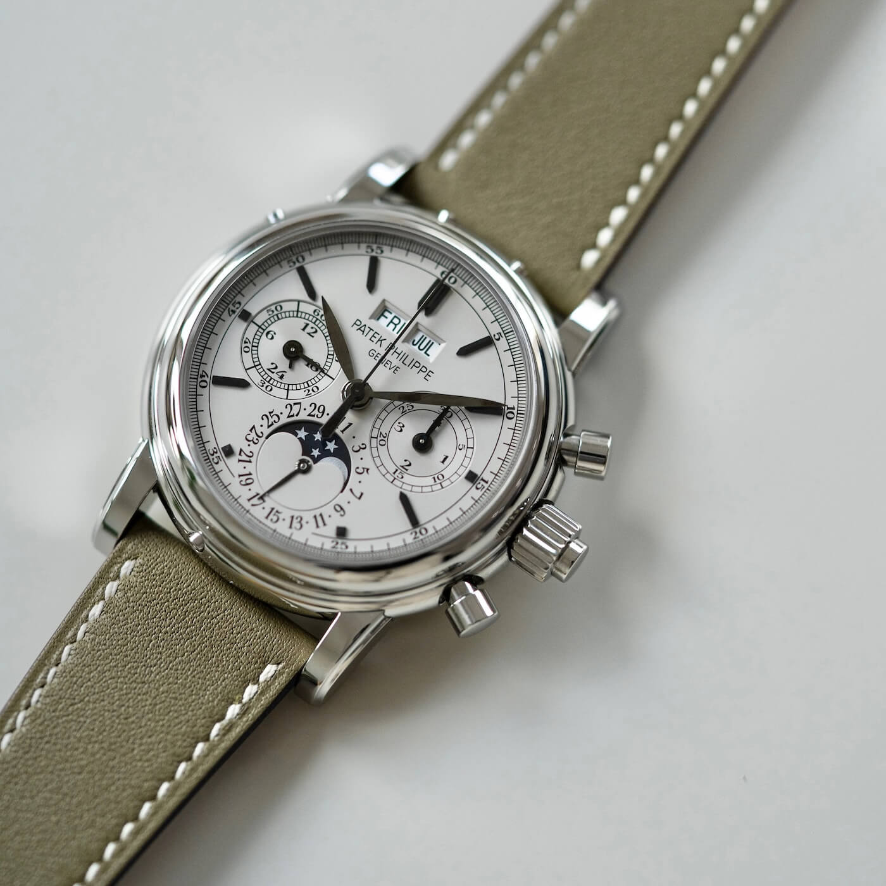
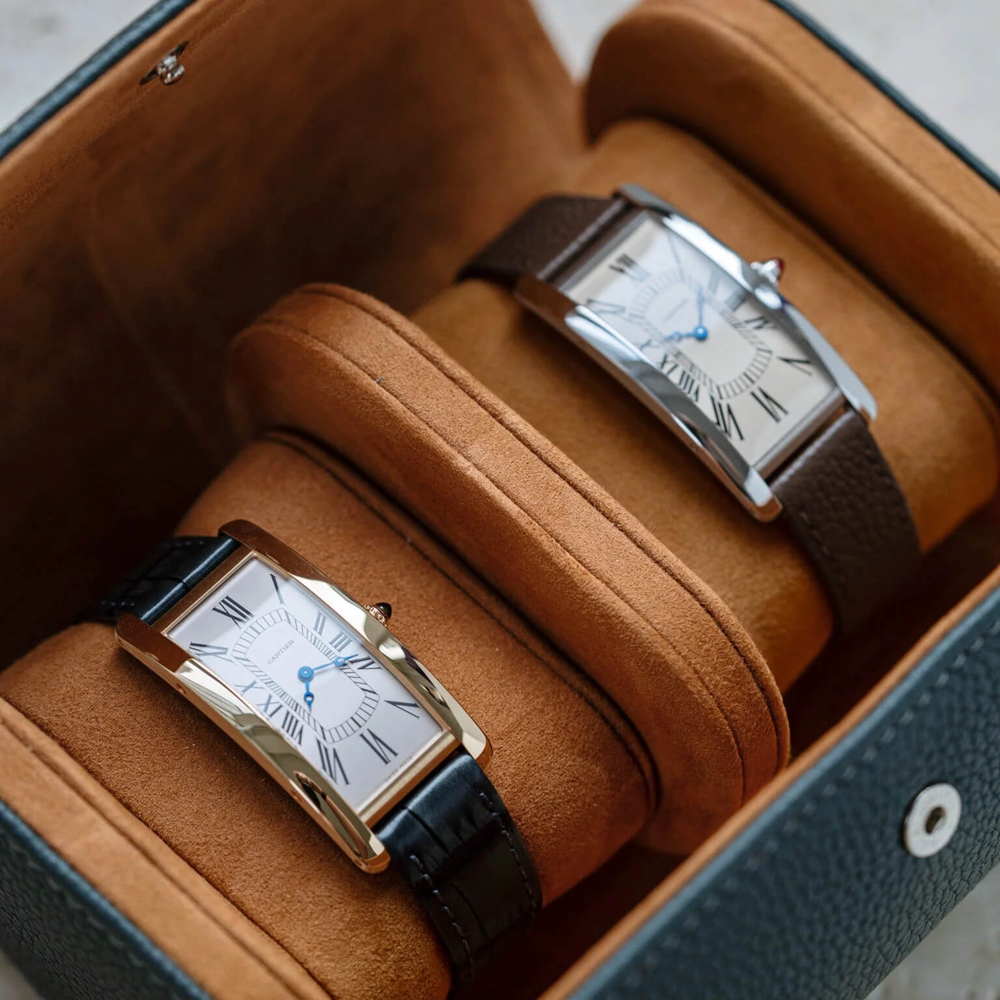
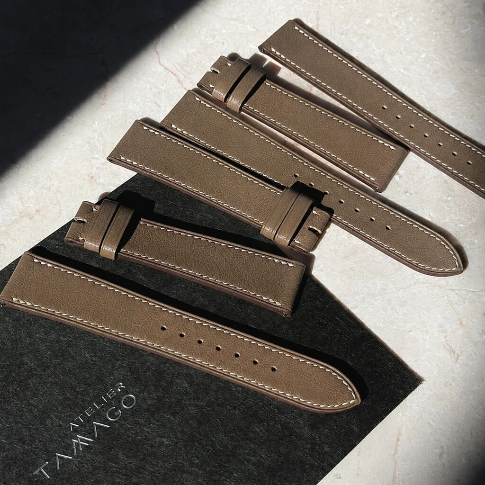
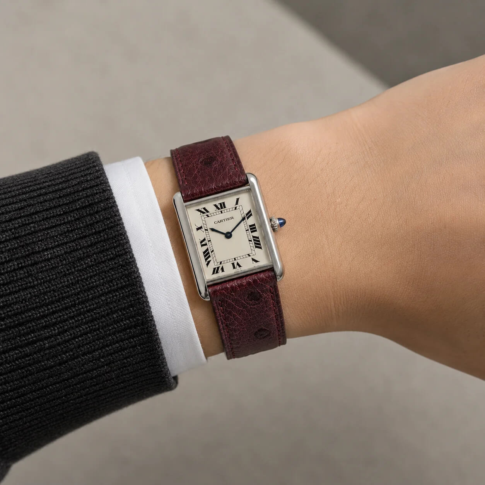
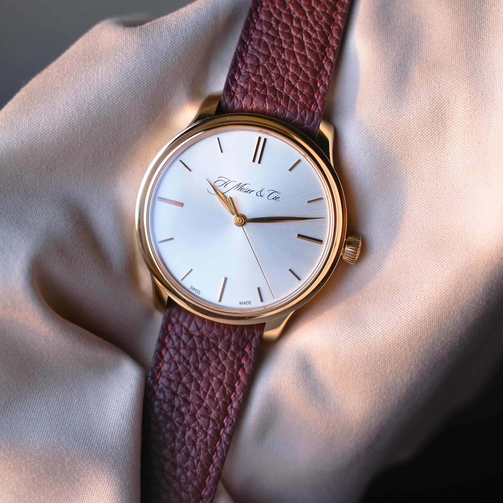
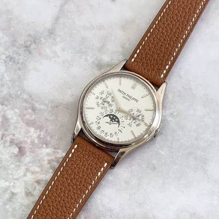
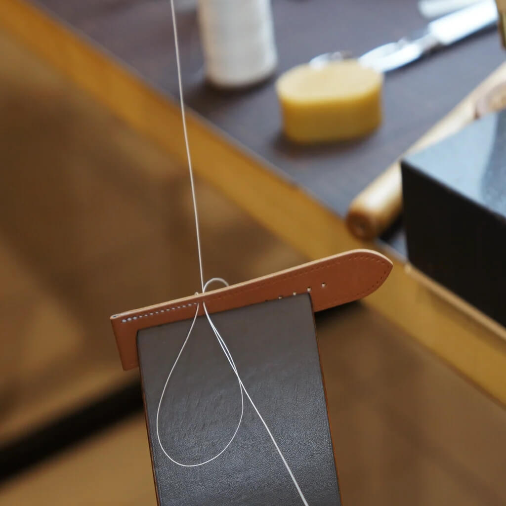
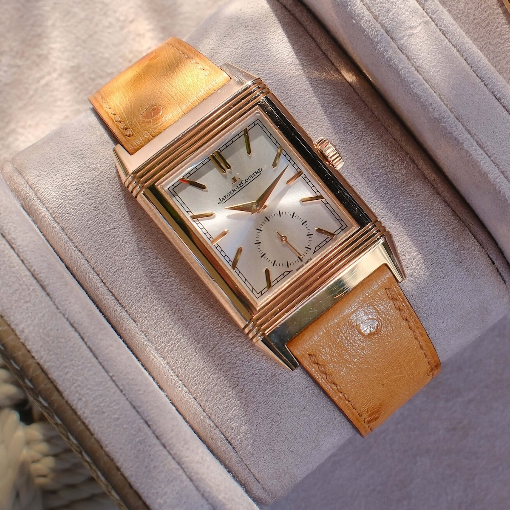
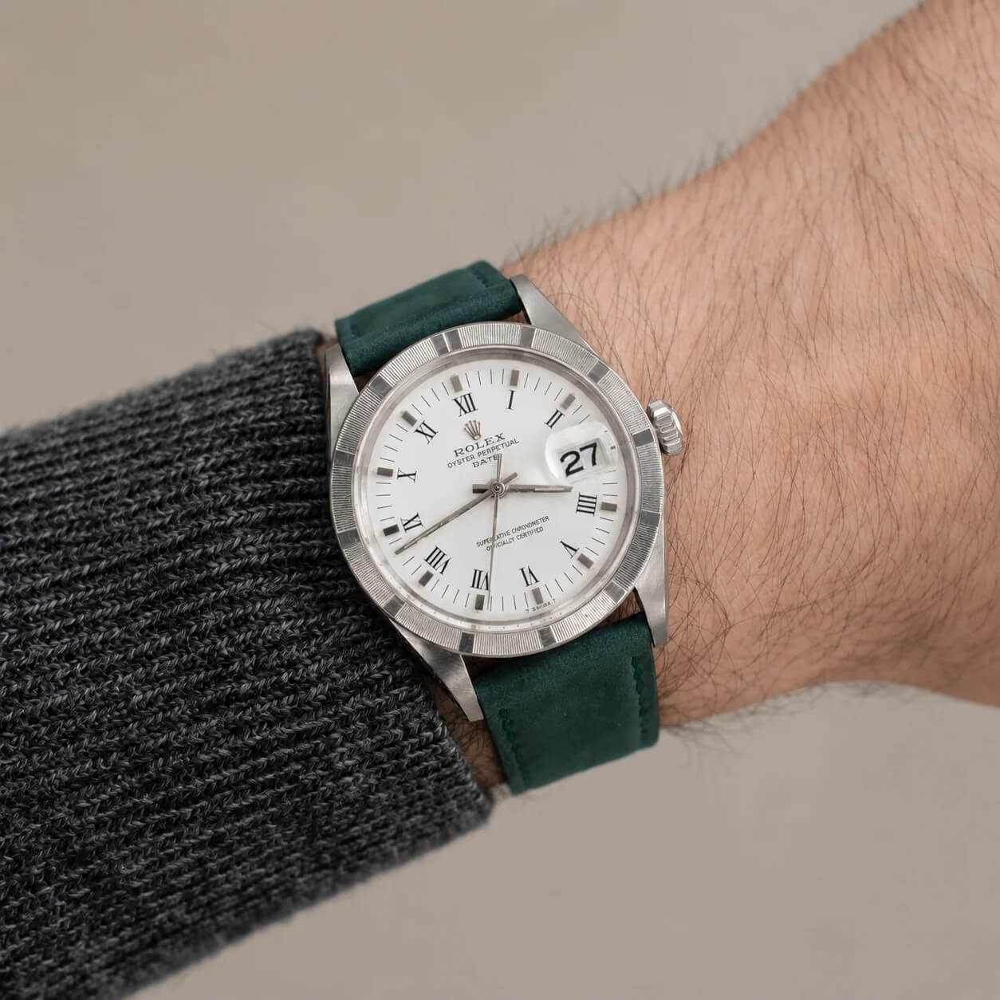
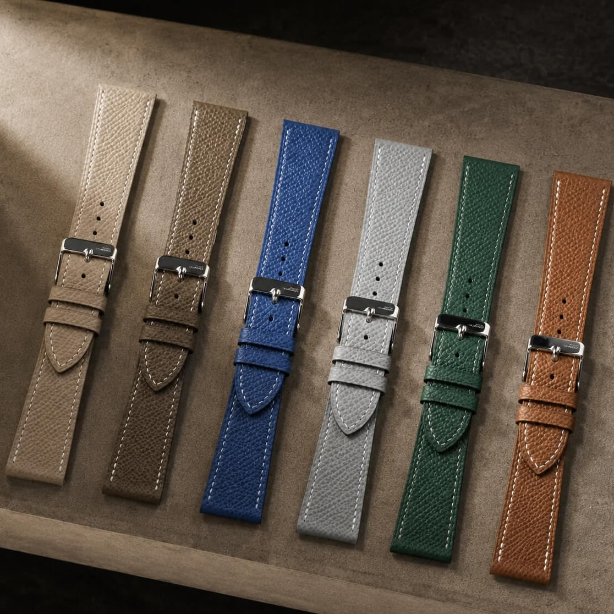
All images on this page are courtesy of Atelier Tamago, and are used with permission.